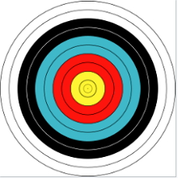

O tiro com arco é um esporte cujo objetivo é acertar a flecha num alvo,
através do uso de um arco.
O tiro com arco é uma modalidade esportiva, que consiste em acertar
uma flecha num alvo circular, com o uso de um arco. O objetivo
principal, que conta mais pontos, é acertar o centro do alvo. Porém,
existe, outras marcações que valem pontos de acordo com a posição.
Origem, história e primeiros torneios
A história do tiro com arcos vem de muito tempo atrás. Desde a Antiguidade, os homens utilizam o arco e flecha como instrumento de caça ou armamento de guerra. Mas nesse período, a prática era utilizada muito mais como necessidade do que propriamente como esporte ou diversão.
Foi a partir de meados do século XVI, que o tiro com arcos começou a ser tratado como um esporte, e foram criados os primeiros torneios. O torneio mais antigo (não oficial) que se tem registrado aconteceu no ano de 1673. Já o primeiro torneio de tiro com arco moderno (com regras parecidas com as que temos hoje) ocorreu em Yorkshire, Inglaterra, em 1844, e o primeiro clube de tiro com arco, o "Grand National Archery Society", foi estabelecido no Reino Unido em 1844.
Nos Jogos Olímpicos, o tiro com arco começou a ser uma modalidade de competição nos anos 90, mas ficou por pouco tempo, devidas as diferenças de regras que cada país tinha. Em 1972, o esporte voltou para os Jogos Olímpicos com a adoção de regras únicas feitas pela Federação Internacional de Tiro com Arco (FITA).
No Brasil o esporte chegou por volta de 1950, mas só chegou a ter regras e uma criação oficial em 1991 com a criação da Confederação Brasileira de Tiro com Arco. Assim, o país foi promovendo competições nacionais e internacionais. Em 1972, o Brasil começou a participar dos primeiros campeonatos mundiais de tiros com arco.
Principais características do tiro com arco:
Equipamentos como rest, loop, mira, peep, estabilizadores e pesos são utilizados para que os tiros sejam mais precisos. Neste esporte é importante que o competidor conheça bem cada um desses equipamentos e como os manusear para obter bons resultados.
Além disso, são utilizados dois tipos de arcos como equipamentos, o recurvo e o composto. Com esses arcos os alvos são de papel ou de materiais sintéticos. Para quem utiliza o arco recurvo é necessária uma dedeira, e para quem utiliza o arco composto um disparador.
Todos os competidores devem ter como equipamentos: roupas e calçados esportivos de tecidos leves, protetor de pulso e protetor de peito (para arqueiros que usam arco recurvo).
Os pontos são contados de acordo com os acertos no alvo.
Objetivos e regras principais do tiro com arco
O objetivo do jogo é acertar o centro do alvo para obter pontos. Quanto mais próximo do alvo central, mais pontos o atirador ganha. No final de uma partida, ganha o arqueiro ou dupla que mais pontos conseguirem.
Todos os equipamentos devem passar por uma checagem antes dos tiros. Quem faz essa checagem são os árbitros.
Além disso, o esporte tem outras regras, como o arco recurvo não pode ser mirado com uma fibra ótica maior de 2 centímetros. As dedeiras não podem conter ganchos ou ferramentas.
Ao fim das rodadas, os competidores têm que ir até o alvo para checar a pontuação obtida, esses pontos devem ser anotados em uma planilha, depois devem ticar o alvo que a flecha atingiu, e por fim retirar as flechas (tudo deve ser feito nessa ordem).
O tempo são de quatro minutos para as rodadas de seis disparos, e o momento que o competidor deve iniciar e concluir seu tiro é anunciado pelo som de uma corneta ou apito.
Principais técnicas e movimentos de preparação e tiro:
Postura: pose mais básica e essencial.
Preparação: ação feita antes de puxar a corda, realizar a técnica de postura e preparação antes ajuda o corpo a reproduzir tudo corretamente na puxada completa.
Enganchar: ação de colocar os dedos na corda. Deve ser realizada de forma cuidadosa.
Ancoragem: técnica responsável por definir o tamanho da puxada completa.
Alvo oficial e pontuação
O alvo oficial (estabelecido pela FITA) é composto por dez anéis concêntricos. De fora para dentro, os anéis são das seguintes cores: 2 brancos, 2 pretos, 2 azuis, 2 vermelhos e 2 amarelos (dourados). São atribuídos pontos de 1 a 10 para cada anel. Sendo o mais externo (branco) de valor 1 (pois está mais longe do centro) e o anel amarelo, mais interno, de valor 10 (por estar mais próximo do centro do alvo).

O alvo utilizado.
Curiosidades do esporte:
- Para saber quais são suas flechas, os arqueiros escrevem suas iniciais nas pontas das mesmas.
- No Japão, a prática do arco e flecha, conhecida como Kyudo, é considerada uma arte marcial e possui um importante componente espiritual. Costuma-se dizer que o propósito do Kyudo não é acertar o alvo, mas sincronizar a mente, o corpo e o arco em busca do crescimento pessoal e do autoaperfeiçoamento espiritual.
- Atualmente, a Coreia do Sul é o país com maior quantidade de medalhas nesta modalidade.
.jpg)